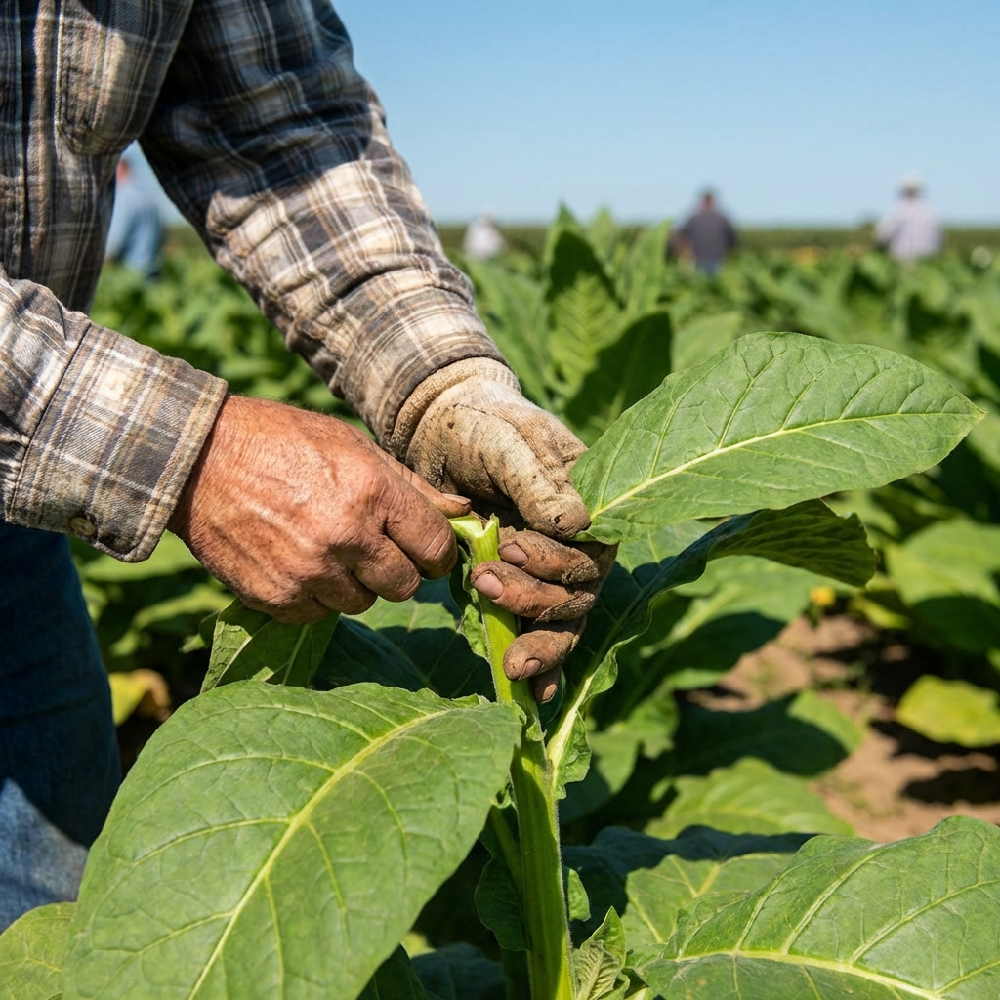

Optimización de Biomasa • Especificación del Gemelo Digital
Seguimiento del desarrollo fisiológico y modelado estructural. Monitoreamos cambios dinámicos en Altura de Planta, Recuento de Hojas y Dimensiones.
El análisis del Índice de Área Foliar permite un modelado estructural preciso y estimación de biomasa.
Optimización de biomasa y calidad. El sistema pronostica Hoja Verde y rendimiento de hoja curada por planta.
Esto asegura que la producción cumpla con los estándares premium del Índice de Calidad.
Cronograma y métricas de eficiencia para la preparación de cosecha. Analizamos curvas de floración y madurez.
Asegurar la uniformidad de maduración minimiza las Pérdidas durante el Curado y maximiza el valor de la cosecha.
